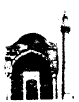

KİM VAR İMİŞ BİZ BURADA YOĞ İKEN sorusunu neden hayatın acılarından dem vuran, “tas tas içtim ağuları sağ iken” diyerek başladığı bir şiirin sonunda sorar Karacaoğlan? Kâh âşık kâh düpedüz çapkın sesi ile tanıdığımız şiirlerinde pek görülmeyen, ya da açık edilmeyen bu felsefi-tarihi duyarlığı, neden kendisine kolayca yakıştıramadığımız efkârlı bir şiirin sonuna yerleştirir?
Bu soru sizde bir merak uyandırmadıysa, hatta tarihçilerin bu tür sorularla uğraşmasını yadırgıyorsanız bu kitabı okumanızı tavsiye etmem,
Burada bir araya getirdiğim dört denemede, on altı ve on yedinci yüzyıllar Osmanlı dünyasından oldukça mütevazı dört kişi ve onlarla ilgili bulduğum belgelerin ışığında peşine düştüğüm bazı sorular ele alınıyor: Babasından kalan arazi üzerindeki haklarını korumak için 1521'de divan-ı hümayuna başvuran Mustafa adlı Yeniçeri; 1660-64 arasında İstanbul'da günce tutan Seyyid Hasan adlı derviş; ticaret için gittiği Venedik'te 1575'te ölen Ayaşlı Hüseyin Çelebi; rüyalarını kaleme alarak şeyhine mektupla gönderen ve bu yolla irşad edilmeyi bekleyen Üsküplü Asiye Hatun. Yazıların her biri ampirik malzemeye, arşivlerde ve yazma kütüphanelerinde bulduğum kaynaklara dayanmakla birlikte, tarihçinin “uzak gözlüğü” saydığım yöntem, paradigma ve felsefe meseleleriyle de uğraşır.
❖
Karacaoğlan'ın “bizden evvel gelen”lere seslenişi, Yunus Emre'nin “biz bu ilden gider olduk / kalanlara selam olsun” şiirinde ahiret âlemine göçerken bu ölümlü dünyanın insanlarına yönelen sesinin içbükey yansıması gibidir.{1} Yunus'un aklıda hep ölüm ve ahiret vardır, orayı anlamaya çalışır, cevapsız kalacağını bilse de mezar taşlarına sorar, ölümlü olmanın ne menem bir şey olduğunu idrak etmek için uğraşır, buralılara yani dünyalılara bu ince elemelerinden bir hisse çıkarır, selam verir, sonra da başını çevirip öteye bakan yoluna devam eder. Karacaoğlan ise hayat doludur, malum, baharın gelip de çiçeklerle donattığı bir dağa baktığını, ya da bir biçimde hayatın orta yerinde durduğunu ifade edecek imgelerle lafa girmeyi sever. Bu efkârlı şiirinde bile, üzerinde ömrünün yarısını tükettiği ama demek ki öbür yarısının hala önünde uzanıp gittiğini düşündüğü bura'dan, ayaklarını sağlamca bastığı dünyadan öteye doğru sual eyler (daha doğrusu, sual eyleme işini bile okura havale eder).{2}
Aradaki fark belli belirsizdir, ama benim için önemlidir: Tarih, yok olanla değil bir zamanlar var olanla ilgilidir. Nitekim, Karacaoğlan da “kim var imiş” diye sorar, onların kanlı canlı insanlar olduklarını hatırlatacak şekilde, şimdi yok olduklarım değil bir zamanlar var olduklarını ifade ederek. Dönüp seyir ettiğimiz zamanlar için bir yokluk söz konusu ise, o bizim yokluğumuzdur, anlama çabasıyla telafi etmeye çalıştığımız yokluğumuz. “Onlardan sonrası” olduğumuzun ve bir de “bizden sonrası” olacağının bilinciyle, yani bugüne ait ve geleceğe dönük bir perspektifle anlamağa çalıştığımız birileridir mazinin insanları. Yunus gibi ölüm gerçeği ve ahiret üzerine düşünmek isteyenler felsefeye yönelse gerektir, Karacaoğlan gibi hayat ve dünya üzerine düşünmek isteyen ise tarihe...
İnsanların tarihini yazmak için onları anlamak, tecrübelerini duyumsamak ve yorumlamak (kökten şüpheci olacaksak, “başkalarını anlamanın mümkün olduğu kurmacasına katılmak” diyebiliriz) gerekir. “İnsan kalbi,” der Tanpınar, “başkalarının duygularına ancak kendi tecrübeleri nisbetinde açıktır.” İyi hoş, ama insan kendi tecrübelerine, yani onlardan bir şeyler öğrenmeye ne kadar açıktır? Kendinin farkında olduğu, kendisi üzerine düşünmeye katlandığı kadar. Yani tarihçinin zanaatında ilerlemesi, kaynak çalışması ve yöntem bir yana, onun kendisine ve dünyasına dair farkındalığını geliştirmesi, duyarlık perdesini tecrübelerini kendine kılavuz edinecek şekilde genişletmesi ile mümkündür.
Tecrübe deyince muhakkak acı ve yanlış ve pişmanlık girer işin içine. Bizi geliştirdiği için güzel şeydir tecrübe ama çoğu insanın ve çoğu toplumun çoğu tecrübesi acılarla örülmüştür. Kolonileri de kendisi gibi ufak bir Avrupa ülkesine hükmettiği için, yirminci yüzyılın fazla adı geçmeyen diktatörlerinden Salazar'ın “mutlu ulusların tarihi yoktur,” derken kastettiği budur. Şimdilerde, acıdan bahsedilir edilmez, arabesk nitelemesi yapıştırılıyor, oysa tango da acıdan bahseder, Billie Holliday de. Reklamların yansıttığı mutlu aile tablolarının normallik olduğu yanılsamasına kapılmamışsanız acıdan konuşmanın utanılacak bir yanı yoktur. Amerika'nın onyıllar boyu kendini, hem halkına hem dünyaya, bir talih beldesi, bir Eldorado olarak sunduğu uzun reklamın bir süre inandırıcı olabilmesi, herhalde, “tarih noksanlığı”na bağlıdır. Yoksa, tarihli toplumlar ütopyadan çok distopyaya meyleder. “Öncesiz sonrasız şimdiyi tam tamına benimsemiş olsaydık,” Cioran'a göre, “tarih vuku bulmazdı ya da her halükârda ağır yük veya azapla eşanlamlı olmazdı”.{3}
“Nedir bu dünyanın hali? Nedir bu insanların çekisi?” sorularının peşinden gitmek isterseniz tarihle ilgilenmeğe başlamışsınız demektir. Burada maksat, çekilmiş çileleri, yaşanmış zulümleri tekrar tekrar terennüm etmek değil. İnsanların hayata nasıl anlam ve zevk, derinlik ve eğlence kattıklarını, kendilerine özerk yaşama ve ifade alanları açtıklarını, üreticiliklerini ve yaratıcılıklarını sergilediklerini, hınzırlıklarını ve hergeleliklerini anlamak da bu işin parçası, hatta -Cioran'ın affına sığınarak- benim tercihimdir, ama tosladıkları ve ördükleri duvarları, çektikleri ve çektirdikleri kahırları unutmadan. On yedinci yüzyılın büyük düşünürü ve tarihçisi Kâtip Çelebi, herkesin tabiatında kendi tekliğini (bireyliğini?) ve bağımsızlığını (“teferrüd ve istiklal”) yaşamaya eğilim olduğunu yazar, ama aynı zamanda başkalarının üstüne çıkmaya, reis olmaya da (“riyaset”) meylettiklerini söyler. Ve ekler: Bu “tek ve bağımsız olma” halini tatmanın derecesi, “cemiyette mevcut olan sınıfların makam ve rütbelerine göre olur”, yani toplumsal hiyerarşi, sınıflı ve zümreli yapı, eşit bir şekilde yaşanmasına izin vermez, “akran ve emsale tabi olmaktan insana ar (utancın verdiği ağırlık hissi) gelmeye başlar”. Peygamberler için bile bu insanlık hali ve ezici hiyerarşi geçerlidir: “Hatta rivayet ederler ki Hazreti Musa, [kendi] asrında nebilerin vücuduna rıza vermeyip dua etti, ruhlarını kabzettirdi.”{4}
Devletlerin, milletlerin, sınıfların, maddi kültürün, çevrenin tarihini yazmak için farklı kaynaklar, okuma yöntemleri, beceriler, vurgular ve hassasiyetler gerekebilir, ama onları da insansız yazamayacağımız aşikârdır. Hele bu kitaptaki gibi çalışmaların oluşturduğu tarihçiliğin öncelikle anlamak istediği, “kim var imiş” sorusunun davet ettiği üzere, insanlar ise... Toplumsal yapıların, süreçlerin, aidiyetlerin çerçevesinde anlamağa çalışsak da tekillikleri ile ele alınan insanlar... Kendilerine dair, biyografi veya mikrotarih yazacak kadar çok şey bilmediğimiz kimseler.{5} Hele, buradaki yeniçeri ve tüccar gibi, kendilerine dair bildiklerimiz, kısa ve işlevsel bir-iki arşiv belgesinden ibaretse; yani kaynaklar, hayatlarından ancak küçük bir kesit üzerinde yoğunlaşmamıza izin veriyorsa. Ama bu kadarıyla bile bu belgeler, “sıradan insanlar”ın hayatına sokulmak isteyenler için bir nimet. Bilhassa daha geniş ölçekli birtakım toplumsal yapılar veya süreçler ile bireylerin hayatının kesişme noktalarına dair sorulan olanlar için. Venedik'te ölen Ayaşlı bir tüccarın ardından kalan bilgi kırıntılarının önemi, onu 16.-17. yüzyıllarda ülkelerarası ticaret ağının içine yerleştirdiğimizde belirginleşiyor. Öte yandan, bu ağı ören insanları, hayal meyal de olsa, tanımadan oluşturacağımız ticaret verileri kuru birer istatistik yığınından ibaret benim için.
“Sıradan insanlar” deyiminin aldatıcı bir yanı var. “Seçkinlerden gayrısı, Tarih yapan, Tarih'e geçen insanlardan gayrısı” gibi bir şeylerin kastedildiği belli, ama sıradan herhangi birini ele aldığımızda o sıradışı olmuştur zaten. Yakından baktığımızda sıradışı olmayan mı var? Hem, sıradışı olanı sıradanlığına da bakmadan anlayabilir miyiz? (Reşat Ekrem Koçu bu soruların hakkını verdiği için hem iyi hem öncü bir tarihçidir, hatta toplum ve kültür tarihçisidir diyeceğim ama kendisi bu terimleri eminim yadırgardı.)
Modern tarih yazıcılığının öncesinde tarihçilerin bu yaklaşımlara tamamıyla yabancı olduğunu düşünmek yanlış olur.{6} Örneğin, Osmanlı tarih yazıcılığını, bu geniş ve derin ve çok kulvarlı sahada sadece bir janr olan vakanüvisliğe indirgemek, bu geleneği de “hep sarayı, hep askeri olayları anlatmışlar” diye yargılamak doğru olmaz. Bir kere, vakanüvislerin vaka olarak ele aldığı olgular, bu dar tanımın sınırlarını çok aşar. Koçu'nun malzemesinin önemli bir kısmı bu kaynaklardadır. Hem, sultanı ve komutanı da insan olarak, hatta sıradan insan olarak ele almak mümkündür. Gelibolulu Mustafa Âlî’nin “Hülâsatü'l-Ahvâl der-Letâif-i Mevâiz-i Sahîh-i Hâl”inde, sultandan başlayarak toplumsal hiyerarşide aşağı doğru her sınıftan insanın, elbette sultan ve vezirlerin de, bu dünyada payına düşen kendine has dertleri anlatılır.{7}
Yirminci yüzyılda insan ve toplum bilimlerinin hikâyesini özetlemenin en iyi yollarından biri, sanırım, yapısalcılık ile yapısalcılık sonrası arasındaki çekişmeye odaklanmak olurdu. Tarihçiler için bunu, yapı ile süreç arasındaki gerilim meselesi olarak ifade edebiliriz. “Vaka” yapısal olan ile süreç içindeki anın kesişme noktası olarak ele alındığında, tarihçinin bu ezeli derdine mütevazı ve zarif bir çözüm sayılabilir. Vaka yazarlığını küçümsemek doğru olmaz, zaten tarihçi tekil olan ile ilgilenmezse ölçüyü sosyoloji yönünde kaçırmış demektir.
Aristoteles tam da bu yüzden şiiri/tragedyayı tarihten daha üstün, daha felsefi bir bilme yolu sayar, çünkü tarih tekil olanın peşindedir (“Akhilleus'un neler yaptığı, neler çektiği”), felsefe ve şiir gibi evrensel olanın değil. Çağdaş dünyada sosyolojiye ve iktisada imrenenler, daha da ileri gidip toplumsal hayatın “yasalarını aramıyorsak bilim yapmadığımızı iddia edenler, tarihi tekil’e olan düşkünlüğünden ve hikâye edici eğiliminden arındırmak için çok çaba gösterdiler. Bilhassa 2. Dünya Savaşı'nın ardından, modernleşme teorilerinin serpildiği dönemde. Türkiye’de de Osmanlı-Türk modernleşmesinin sıkıntıları, “sosyoloji beyaz, antropoloji kahverengi derililer içindir” vecizesinin işaret ettiği yönde, sosyoloji üzerinden tartışıldı. Üstelik, o yıllarda teori fetişizmi şimdikinden de beterdi. Aslolan, yani ciddi bir entelektüel için önemli olan, teorik ve sosyolojik bir söylem kullanmaktı. Toplumsal gerçeklerle uğraşırken ampirik düzlemden fazla uzaklaşmayan bilgi üretme biçimleri, başta tarih, en iyi şartlarda, ne yaptığını bilen birer hizmetkardı. Tarih okumak, hele Osmanlı tarihi okumak, yararlı, ilginç, hatta önemli olabilirdi ama sosyal teori okumak ve konuşmak, o dilin canbazı olmak kadar saygın olamazdı.
Tarihi sosyal bilimlerden bir bilim olarak yeniden tasarlama gayretleri bir yere kadar başarılı oldu, bir yere kadar hayırlı da oldu. Ama bir yere kadar. Sonuç olarak tarih, toplum ve insan bilimleri arasında kendine salıncak kurmayı yeğledi, hatta bilimsellikle hikâye etme arasında tercih yapmanın da şart olmadığına kanaat getirdi. Tekil ile bağını koparmadan yapılardan, süreçlerden, dizgelerden de bahseden bir dil geliştirdi.
Günümüz Türkiye'sinde birinci çoğul şahıs enflasyonuna çare bulmak için dilden kaç “biz” atmak gerekir bilmiyorum. Kendisini Osmanlı devletinin yönetici iradesiyle sorunsuz özdeşleştiren “biz”den (“almışız, beş yüzyıl elimizde tutmuşuz,” gibisinden), Orta Asya'dan atına atlayıp Anadolu'ya geldiği tahayyül edilen kahramanların çocukları konumundaki “biz”e (“göçebelikten taş ev mimarisine geçemedik”), ve tabii en büyük seferberlik mekanizmalarından futbolun “biz”ine (“içimizdeki İrlandalılar” ya da, en mükemmeli, “taç kullanıyoruz”), sıcak bir hamam gibi rahatlatıcı, gevşetici o kadar çok biz var ki gündelik dilde. Çoğu, bir yandan “onlardan farkımız”ın altını çiziyor, bir yandan da “ayağını denk alması gereken sizler”in üstünü.
Karacaoğlan'ın sorusunda geçen biz ise “biz, halihazırda dünyayı paylaşan insanlar”ın biz'i. “Burada” dediği yer de hem durduğu noktadan gördüğü yerler, hem bütün dünya. Bu anlamda Karacaoğlan'ın şiiri evrenseldir. Onun şiirinin sesini ve duyarlığını paylaşan çağının insanlarını da, kuşatıcı bir insanlık tarihinin özneleri olarak anlayabiliriz ancak, sadece Türk veya Osmanlı veya İslam tarihinin özneleri olarak değil.
Bugün, “sayalım bakalım kim var imiş, Sümerler, Hititler, Frigler...” gibi bir cevap hiç yadırganmazdı, ama Karacaoğlan'ın aradığı cevap ne bu tür bir şeyle karşılanır ne de “hıristiyanlar putperestler” gibi bir şeyle. Tabii burada onun bir cevap beklediği, hele somut verilere dayalı tarihi bir cevap beklediği, çok şüphelidir. “Şu dünyadan kimleeer geçti?” gibi de okunabilir sorusu. Ömrünün yarısının “talana gittiğini” hisseden bir adam, “şu dünyanın tasası daha kimleri öğüttü?” diye hayıflanmaktadır belki de. Ama Karacaoğlan bunu sadece kendisi ile ilgili bir mesele olarak sunmakla kalmaz, bir insanlık hali ile de özdeşleştirir, çünkü ilk defa çoğul şahısa geçer. Şiir boyunca ve o can alıcı sorusunu sormadan hemen önce “ömrümün yarısı” derken tekil kullanmıştır, oysa artık “biz”den söz etmektedir, ve bu bir milletin ya da bir ümmetin, o tür bir aidiyetin biz'i ile sınırlı değildir.
Her tercih, her perspektif bir şeyleri daha iyi görmemizi sağlayabileceği gibi bir şeyleri de örter. Birim olarak milletlerin üzerinde durmanın da elbette yeri ve yararı vardır. Seçilen konuya ve sorulan soruya göre, bazı perspektifler diğerlerinden daha iyidir, kullanışlıdır, yararlıdır, vs. Ancak Osmanlı toplumunda sıradan insanı ya da, gerek sıradışılıkları gerek sıradanlıklarıyla, kişileri anlamaksa maksat, onların hikâyesini tarihötesi bir millet kavramının varlığından hareket ederek kurmak pek yararlı olmaz. İnsanlar bir zamanlar “Türk” veya “Hırvat” veya “Alman” veya “Japon” olmakla bizim şimdi olduğumuz kadar meşgul değillerdi. Günümüzün şu veya bu ölçüde sekülerleşmiş toplumlarına göre “müslüman” veya “hıristiyan” olmakla daha bir ilgiliydiler belki ama o da zannedildiği gibi kuşatıcı değildi, yekpare değildi, ve en azından 16. yüzyıldan bu yana sekülerleşmenin etkileri hissediliyordu.
Modern toplumların siyasal düzenine hâkim olan ulus-devlet modelinde kaçınılmaz olarak ben ve biz kavrayışları da değişti. Eğitimin ve kitle iletişim imkânlarının yaygınlaşması ile bu kavrayışlar içselleştirildi, hatta (okulda, orduda, vb.) toplu hareket ve tören disiplini ile bedenselleştirildi. Yeni biz'ler ve yeni ben'ler çıktı.
Bu meyanda, 15.-16. yüzyıllardan beri Batı dünyasının rotası modernite dediğimiz şeye doğru evrilirken “birey”in ortaya çıktığı, klan ve geniş ailenin yerini çekirdek ailenin aldığı, insanların cemaat veya klan içinde erimektense kendilerini birey olarak idrak etmeye yöneldikleri, bununla birlikte mesela hatırat ve günce yazımının serpildiği, ya da sanatçıların ortaçağlarda eserlerine imza atmazken modernleşme ile birlikte isimleriyle tanınma peşine düştükleri, bu gelişmelerin çok daha geç ve sancılı ve kusurlu olarak Batıdışı toplumlarda da boy gösterdiği gibi motifler içeren anlatılar, 19. yüzyılın ortalarından bu yana çok yaygın olarak kabul görüyor. Otoriteye itaat etmektense kendi kararlarını özgür bir şekilde verebilen, en azından vermek için mücadele eden bireylerin varlığı modernleşmenin ölçütlerinden addediliyor.
Bu kitaptaki yazılarda ele aldığım dört Osmanlı, bu bireyleşme hikâyesinin neresinde duruyor? Önce, bireyin ortaya çıkması ve modern hayata damgasını vurması hikâyesi günümüz tarihçiliğinde nerede duruyor, sorusuna bakmak gerekir.
“Ben ve Başkaları” yazısında ele aldığım gibi, tarihçiler bu anlatıyı nicedir sorunsallaştırıyor. Hem ampirik düzlemde hem yöntem ve yaklaşım açısından. Sorun, geçmiş ile olduğu kadar bugün ile de ilgili.
Rekabet ile tanımlanan dünya çapında bir organizasyona, Olimpiyatlara bakarsak mesela, birey olarak atletin giderek ikinci plana düştüğü, uluslar arasındaki yarışma boyutunun öne çıktığı görülür: 1936'dan bu yana atletlerin performansı ulus puanı içinde değerlendiriliyor, kabul edilen takım oyunlarının artmasıyla ulusal takım müsabakaları artıyor ve profesyonellik ile ilgili sınırlamaların büyük çapta gevşetilmesiyle bu müsabakaların seyirci sayısı ve pazar değeri almış başını gidiyor.
Sonuncusu, yani olimpik olsun olmasın sporun kapitalist pazar mantığının biçimlendirdiği bir eğlence endüstrisine dönüşmesi, modern toplumlarda bireyleşme konusunu bir diğer açıdan sorgulamamızı gerektirir. Kendini tüketim tercihleriyle ifade ettiğine giderek inandırılan, aynı zamanda son yılların teknolojik imkânlarıyla, her harcaması izlenebilen ve hatırı sayılır bir ölçüye kadar yönlendirilebilen insanların “kendileri olmak” konusunda ne kadar bağımsız davranabildiğini sorgulamak gerekir. Cep telefonu ve internet yoluyla dünyanın her yerinde her an ulaşılabilen insanların kendilerini dünyadan yalıtma halini yaşayabildiklerinden şüphe etmek için çok sebep var. Tefekkür ve/veya zühd ile içine dönmek günümüzde nereye kadar mümkün? Cioran için mesela “liberal toplum ... bireyi birey yapan kendi derinliğinden uzaklaştırarak (onu) kendi başına” bırakır.
Öte yandan, bu değerlendirmeden bir oldubittiye varmak, “bir zamanlar cemaatle birey huzur içinde bir arada yaşarmış meğer, bireyleşme hikâyesi bir safsataymış” diyerek bireyleşme anlatısının defterini dürmek o kadar kolay değil. Tebaa olmaktan vatandaş olmaya geçişin önemli olduğunu, kişilerin otorite önünde benlik algılarında büyük dönüşümler yaşandığını, modern sanayi toplumlarında bireylerin yeni ve vazgeçilmez bazı özerklik ve özgürlük alanları kazandığını inkâr etmek, kolaycılığa, düpedüz nostaljiye kapılmak olur.
En azından şunu söyleyebiliriz: Aile, klan, cemaat, ümmet içinde erime halinden birey olma haline geçiş, diye özetlenebilecek çizgisel bir hikâye yok. Değişik zamanlarda ve bağlamlarda, kişilerin benlik algısının ve bireyliklerini yaşama biçimlerinin değişmesidir söz konusu olan. Kendilerini aşan yapılarla kâh uyuşarak kâh didişerek iç içe yaşayan insanların gelgitli hikâyesi.
Bu kitapta ele alınan dört kişiden hiçbiri, bir ulusun bireyi/parçası değil. “Tabii canım, onlar bir ümmetin parçası” demek kolay ama bu da sorunsuz değil. Bir kere, Osmanlı toplumunda yekpare bir Müslümanlık yoktu (makalelerde ele alınan kişiler dolayısıyla tartışmayı Müslümanlar ile sınırlıyorum ama söylediklerimin, üç aşağı beş yukarı, diğer cemaatler için de geçerli olduğunu düşünüyorum). Kızılbaş veya Sünni olmak, köylü veya şehirli olmak, tarikat mensubu olmak veya olmamak gibi nice fark düşünebiliriz. Hemşehri (hemşeri) olan Sünni Müslümanlar arasında bile değişik tasavvurlar olduğunu, hatta zaman zaman bunların çatıştığını biliyoruz. On yedinci yüzyılın ortalarında İstanbul ahalisinin yaşadığı keskin kamplaşmadaki fay hatlarından birisi, “ümmet-i Muhammed'den” olan kimselerin “millet-i İbrahim'denim” demesinin caiz olup olmadığı etrafında biçimlenmiştir. Kâtip Çelebi'ye göre “İbrahim milletindenim, halk arasında yayılmış ve kökleşmiş bir sözdür.” Bir yandan da, Müslümanların kendilerini bu şekilde tanımlamasına şiddetle karşı çıkanlar vardır. Müslüman kimliğine sahip çıkarken, diğer semavi dinlerle bağını vurgulamayı da seçebilirsiniz, sınırları tahkim etmeyi de.
Modernizm, kendine biçtiği büyük tarih anlatısında, geleneksel, modern öncesi gibi nitelemelerle ele aldığı toplumların, mesela bu kitapta ele alınan 16.-17. yüzyıl Osmanlı şehir ehlinin, ne derece sofistike olduğunu gözlerden uzak tutmayı başarmıştır.
Bu ideolojik çarkın dişlileri o kadar öğütücü ki, tarihçilerin nice zamandır uğraştığı revizyonun etkisi küçük çevrelerle sınırlı kalıyor. Osmanlı toplumunda insanların kendilerini birey olarak ifade etmekten, bu uğurda aileyse aile, cemaatse cemaat, devletse devletle çatışmaktan imtina ettiğini düşünmek hâlâ yaygın. Oysa Evliya Çelebi, seyyahlık kariyerine başlamadan önce İstanbul sokaklarında “peder ü mâder, üstad [ü] birader kahrından nasıl kurtulur da cihan gezgini olurum?” diye kıvranarak dolaştığını yazar. Fuzûlî ise, çok düşünerek bulduğu mahlasından memnun olduğunu söyler, çünkü “hakikaten bu mahlas birçok yönden benim istediğim gibi ve davama uygun bir lakap oldu. Evvela, ben âlemde tek kalmak isteyen bir insandım. Bunu mahlasım temin etti. Ferdiyetimin eteği ortaklık elinden kurtuldu.”{8}
Elbette kişiler kendilerini birtakım bireyüstü toplumsal yapılara ait hissediyordu, şimdi de hissediyor. Bunların haritasını çıkarmak bugün için oldukça zor olmakla birlikte, Osmanlı dünyasındaki değişik aidiyet duygularının ve tasavvurlarının kaynaklardaki izini sürerek, ortaçağdan moderniteye çizgisel bir hikâye içine yerleştirmek amacı gütmeden, “keşif” çalışmalarına başlayabiliriz. Bilhassa, Seyyid Hasan’ın ve Asiye Hatun'un kaleme aldıkları gibi, birinci tekil şahıs sesi ile yazılmış metinleri mercek altına alarak. İşin hoş tarafı, bu tür örneklerin sanıldığı kadar nadir olmadığının artık farkına varılıyor.{9}
İnsanların ve toplumların geçmişini anlama derdi taşıyan tarihçinin en önemli melekeleri arasında empati vardır, yani kendini başkalarının yerine koyma, başka hayatları, başka tecrübeleri adeta kendi bedeninde duyma yetisi. Bu açıdan tarihçi, bir romancı veya bir tiyatro-sinema oyuncusu gibidir. Nasıl ki oyuncu kendini kâh mahpus kâh zindancı rolünde bulacak ve sıra hangisindeyse bu kişilikleri içinde bir yerlerde tanıyarak yansıtmağa çalışacaksa, tarihçi de hem aşıkı, hem maşuku, hem çöpçatanı, hem kıskananı anlamak için elinden geleni ardına koymayacaktır. Dil(ler) bilecektir, ama her şeyden önce okumayı bilecektir, okurken başkalarının sesine kulak vermeyi bilecektir. Duygu ve duyarlıklarını da anlamak isteyecektir.
Duyguların da tarihi mi olur? derseniz, edebiyat okumanızı, mesela Oğuz Atay'ı okumanızı öneririm: '“Moralim bozuldu,' diyordu cahil herif; öyle plastik terlik giyen birinin morali olurmuş gibi.”{10} Toplumsallığını, yani sınıfsallığını kabul ettiğimiz her şey tarihseldir.
“Acılardan, duygulardan bahsettin durdun; tarih mevzuunu aşkla karıştırmış olmayasın” diye soran okurlar olabilir. Fransız Devrimi üzerine bunca büyük tarihçi yazmışken, kendi kitabının nasıl olup da diğerleri arasında sivrildiği sorulduğunda, Michelet açık konuşmuştur: “Ben daha çok sevdim / j'aimais davantage.”
❖
aşklar da bakım istiyor öğrenemedin gitti
seviş yolcu büyük sözler söyle ve hemen ayrıl
uçurumlar birleştirir yüksek tepeleri
Cemal Süreya'nın hatırlattığı (ve sonradan kaçmamızı önerdiği) bakım meselesini, yani emeğe ve meşke dayalı düzlemi dikkate almanın sırasıdır.{11} Selvi Boylum Al Yazmalım'da Asya'nın (filmde: Türkân Şoray), hercai sevgilisi İlyas (Kadir İnanır) ile aşka emek vermenin değerini bilen Cemşit (Ahmet Mekin) arasında seçim yapması gerekir, ama tarihçinin tasası her ikisi ile birden yaşamayı öğrenmek olmalı.
Maksat, anlamaya çalıştığımız insanların duygu ve düşünce dünyasına nüfuz etmekse, bu ille de onların duygularını paylaşmakla, yaşadıkları karşısında “hislenmekle” hasıl olmaz. Başkalarının acısını “gösteren” fotoğraflara bakarken duyacağımız sempati, Susan Sontag'ın yazdığı gibi, vicdanlı ve masum olma ayrıcalığını, ya da avuntusunu, tatmamızı sağlayarak tahlil zahmetinden kaçmamızın vasıtası olabilir.{12}
Kendimizi duyguların sıcaklığına, tepkilerin güdüsüne bırakmamamız için de eğitim, yöntem ve sürekli bir çaba gerekir. Çağdaş Türk tarih yazıcılığının kuruluş döneminde, Zeki Velidi Togan ve Mehmet Fuat Köprülü gibi yazarların çok emek vererek Türk üniversitelerinde yerleştirdiği usul veya metot eğitiminin demode olduğunu, veya olacağını, düşünmek büyük bir yanlış olur.{13} Tarihçi, istediği kadar felsefi derinlik kazansın, istediği kadar yeni tarihçilik anlayışlarına ve metin okuma stratejilerine aşina olsun, edindiği ve edineceği filolojik ve paleografik becerileri geliştirmek ve düzenli bir şekilde ampirik malzeme üzerinde uygulamak anlamında meşk etmiyorsa bir yere varamaz. Hammaliye ise hammaliye. Tonlarca arşiv belgesi arasında idinin dıdısı ile uğraşmanın romantizmini de yabana atmamalı. Kaynakların zenginliği ve öğrenileceklerin uçsuz bucaksızlığı keşif yolculuğunun yükünü de arttırır, zevkini de.{14}
Dolayısıyla, burada tarihçilik üzerine söylediklerimi, Togan ve Köprülü’nün metot konusunda yazdıklarına bir ek (daha doğrusu, eski tabirle bir “zeyil”) sayabilirsiniz. Bu zeylin devamında, aşk ve meşkin ötesinde birtakım tavır ve duyarlıklara da değinmek gerekir.
Tarihsel olanın doğallaştırılmasına (“büyük balık küçük balığı yutar, dünyanın kanunu bu”) izin vermemek, bunların başında gelir. Bazı söylemlerde doğallaştırmanın yerini kutsallaştırma alır, ya da bu iki tavır birbiriyle harmanlanır: “kadınla erkek eşit olur mu? Tanrı böyle yaratmış.” Oysa tarih, bir şey gösterirse eğer, her düzenin, her sömürü biçiminin, her kurumun, her kavramın, her hiyerarşinin, her karşı çıkış imkânının ve söyleminin, insanlar eliyle başka başka biçimlerde inşa edildiğini, usul usul da olsa tekrar tekrar dönüştürüldüğünü, yapılıp bozulduğunu gösterir.
Cinsiyet dahil, toplumsal olan her şeyin tarihsel olduğunu, zaman içinde hem biçim hem anlam değiştirerek evrildiğini söylemek, her şeyin imkân dahilinde olduğu anlamına gelmez. Bizzat kendi yazdığına göre, Hannah Arendt totaliterlik üzerine yaptığı çalışmalarda şunu göstermeye gayret etmiştir: “totaliterlik olgusu ... her şeyin mümkün olduğu kanaatine dayanır.”{15}
Totalitarizmin günahlarının önemli bir kısmını Marx'a yazmaya çalışanlar bile, Alman düşünürü bu açıdan suçlayamazlar. Onun deyişiyle, “İnsanlar tarihlerini kendileri yaparlar, ama tamamen kendi diledikleri gibi değil - kendi seçtikleri koşullarda değil, doğrudan yüz yüze geldikleri, geçmişin aktardığı ve onlara temin ettiği koşullarda yaparlar.” Yeniçeri Mustafa'yı, tüccardan Hüseyin Çelebi’yi, Seyyid Hasan'ı, Asiye Hatun'u anlama isteği, içinde yaşadıkları düzenin ve dünyanın onlara sağladığı imkânları ve önlerine çıkardığı sınırları oluşturan sosyal, ekonomik ve kültürel yapıları da tanıma çabasını birlikte getirir. İşin güzel tarafı, yapısal olanı ve olayların içinde cereyan ettiği dizgeleri ne kadar iyi tanırsak tanıyalım, insanlar bizi şaşırtacaktır.
Bu kitaptaki tüccar makalesine konu olan sof ticaretinin 16.-17. yüzyıldaki merkezlerinden Ayaş'ı gezmeye gitmiş, bugünün Ayaşlılarına sokakta rastgele “sof nedir?” diye sormuştum. Sorduklarım arasında kimsenin kelimeyi bilmemesine şaşırdığımı anlatmıştım bir keresinde, dinleyenlerden bir yakınım, “tabii bilmezler” demişti. Bu tepki de beni şaşırtmıştı: Neden tabii? Bilmek, anlamak, çözümlemek veya en azından irdelemek istediğimiz çoğu şey, mantık-zekâ-tahsil gibi vasıf ve melekelerin yeteceği şeyler değil. Tarihçinin ampirik veri ile olan ilişkisi, bir yanıyla meşk konusuna girer, bir yanıyla da tekil olana yönelik bir tavır meselesidir. Hiç bir teori, insanlık hallerinin her bir tezahürünün hayrete şayan olması gerçeğini tüketemez.
Bu kitapta okuyacağınız yazıların her biri şaşkınlık ürünüdür. Yeniçerilerin “bozulma” devrinden önce askerlik dışında hiçbir işle uğraşmadığını; uluslararası ticarette Müslümanların rol oynamadığını; modern Batı değerlerini özümseyene kadar Osmanlı dünyasından kimselerin günce tutmadığını, hatta kişisel tecrübelerini kaleme almadığını sanıyordum. Karşıma çıkan belge ve kaynaklar beni hayrete düşürdü. Bu karşılaşmanın bende uyandırdığı macera dürtüsüyle araştırmak ve anlamak istedim.